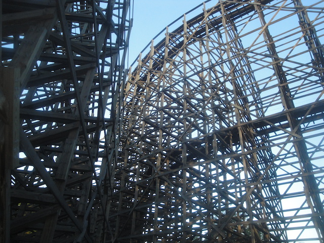
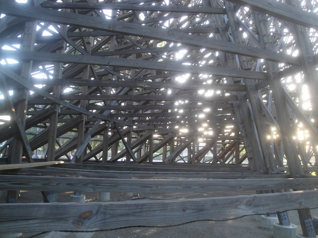
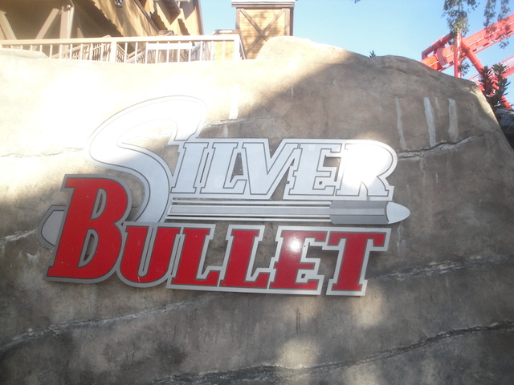
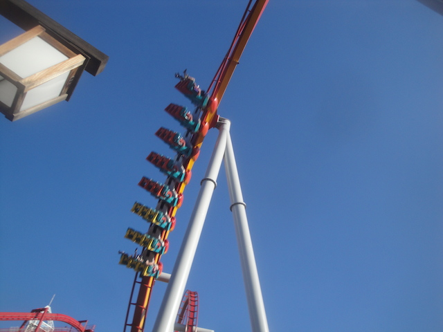
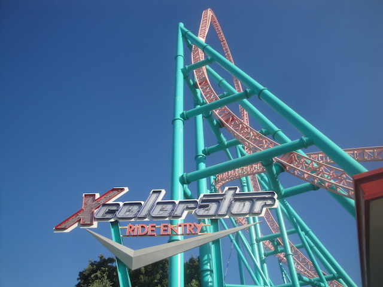
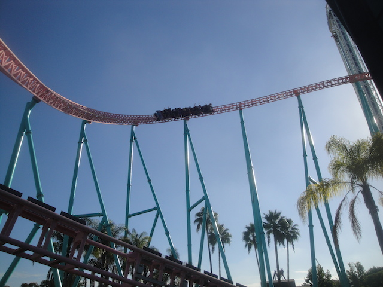
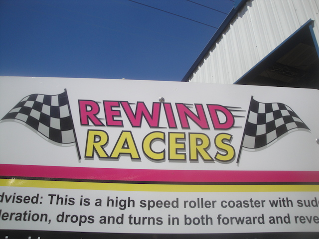
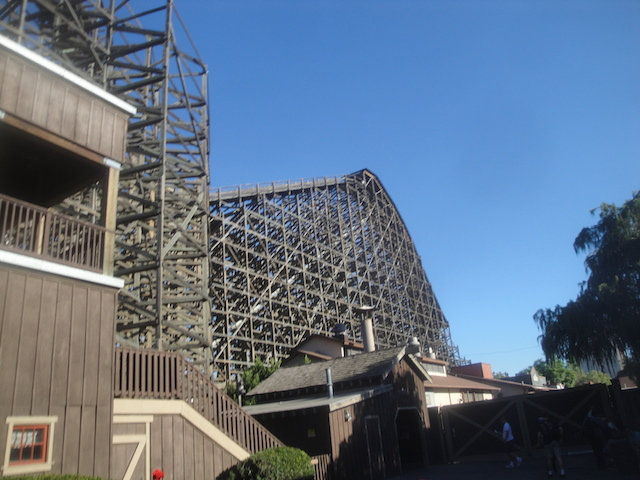
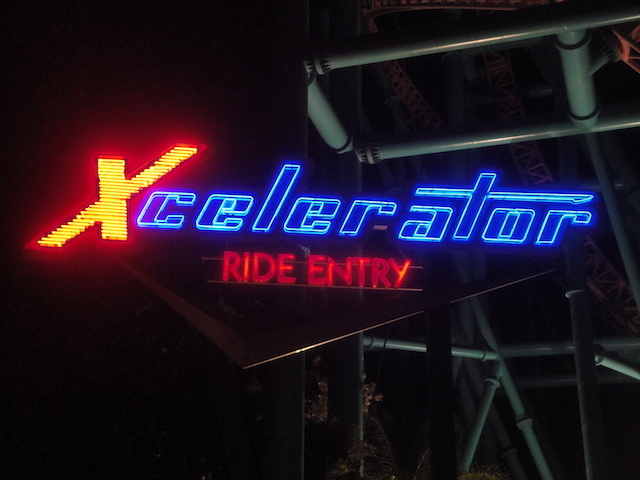

| |
West Coast Bash 2015
All right. Time for West Coast Bash. Yeah, it's been too long since I last went to this event. I know I used to go to the Six Flags Magic Mountain day for years, then took a year off, before doing the Knotts Day. Then I took another year off, and BAM!!! Here I am for another fun West Coast Bash.

All right. First things first, we got ourselves a backstage tour of Ghostrider. =)
 I only wish that we could have this tour when the ride was running. Cause if I got trains in these shots, Oh man!!! *drool*
I only wish that we could have this tour when the ride was running. Cause if I got trains in these shots, Oh man!!! *drool*

Love this, but I don't need much time here. I've snapped all my photos. Moving on.
 All right. For our other backstage tour, we've now moved onto Sierra Sidewinder for even more fun of that kind.
All right. For our other backstage tour, we've now moved onto Sierra Sidewinder for even more fun of that kind.
Nerdiness awaits inside.
Ooh. Just what I need. Another coaster wheel to clutter up my room and take up space. =)
"Who was it again who built Sierra Sidewinder again?"
"Hey. Are you worried that your friend is going to kill you and drive you off a cliff? Have no fear. Just take a seatbelt. They'll automatically make you safer."
Extreme roller coaster nerds are cumming right now.

Enough with the roller coaster nerdiness and backstage tours!! Let's actually ride some god damn roller coasters!!!

Hey! This coaster just keeps getting better. This funky overbank is just a lot of fun.
 It may not be Batman, but there's still some whip to this corkscrew.
It may not be Batman, but there's still some whip to this corkscrew.
Yeah. You can tell that Morning ERT is going really well.

Hell yeah! It's time for Xcelerator! =)

Without a doubt, the best coaster at Knotts Berry Farm and one of the best coasters in California. This ride kicks ass.
Holy Crap! Is that Riptide testing!? I just thought that it was permanently SBNO like Flashback and on it's way to being removed!
 Hey. They even have Voyage to the Iron Reef open for ERT.
Hey. They even have Voyage to the Iron Reef open for ERT.
*evil laugh* "You'll never see daylight again!"
Hey. I had a car to myself. I decided to play double-handed. Surprisingly, I wasn't nearly as bad at this as I thought I was.
 *gasp* "We have people here who've never been to Knotts Berry Farm before? QUICK!!! WE MUST TAKE THEM ON PONY EXPRESS!!! BECAUSE AS WE ALL KNOW, PONY EXPRESS IS THE BEST RIDE EVER!!!!"
*gasp* "We have people here who've never been to Knotts Berry Farm before? QUICK!!! WE MUST TAKE THEM ON PONY EXPRESS!!! BECAUSE AS WE ALL KNOW, PONY EXPRESS IS THE BEST RIDE EVER!!!!"
 All right. A lot of people who flew in needed the credits at Adventure City and wanted to do some credit whoring. Now, I may have been to this park before and got the credits. But since I whored out the place, they removed Treetop Racers and just this year, replaced it with a new family coaster, Rewind Racers. And since I am in fact, a credit whore, I decided to return so I could get that credit. So here I am. Never thought I'd be returning back to this park.
All right. A lot of people who flew in needed the credits at Adventure City and wanted to do some credit whoring. Now, I may have been to this park before and got the credits. But since I whored out the place, they removed Treetop Racers and just this year, replaced it with a new family coaster, Rewind Racers. And since I am in fact, a credit whore, I decided to return so I could get that credit. So here I am. Never thought I'd be returning back to this park.
Former Subway Spokesmen Need Not Apply.
 I may have this credit, but everyone else doesn't. So, here I go again.
I may have this credit, but everyone else doesn't. So, here I go again.
 "HEY KID!!! NO TEXTING ON THE RIDE!!! PUT THE DAMN PHONE DOWN!!!"
"HEY KID!!! NO TEXTING ON THE RIDE!!! PUT THE DAMN PHONE DOWN!!!"
It may be a kiddy coaster, but at least it's a fun kiddy coaster.
All right!! It's credit time!!
DAMMIT!!! What the hell am I supposed to do for the next hour!!?
 "I bought this drink for the sole purpose of obtaining this cup." =)
"I bought this drink for the sole purpose of obtaining this cup." =)
"I traveled all the way from England, not for West Coast Bash, or seeing the sights, or even to credit whore at Adventure City. But to have my picture taken with Thomas the Tank Engine."
"Is it me or are there balloons growing out of my head?"

Oh boy!! It's 12:00. Rewind Racers has officially opened!!! =)
But I wasn't just obtaining a credit today. No, this was a very special occasion for me. For you see...
I hit #500 today!!! Yep. Rewinder Racers ended up being Credit #500 for me. Who knew I'd hit it at a place like Adventure City. =)
 "If you guys aren't reaching a milestone today, then wipe that stupid smile off your face."
"If you guys aren't reaching a milestone today, then wipe that stupid smile off your face."
 Enough talking. It's time to ride.
Enough talking. It's time to ride.
 Time to head up the lifthill and get a nice view of the streets of Anaheim.
Time to head up the lifthill and get a nice view of the streets of Anaheim.
 I must say, these Jr. Boomerangs really are fun rides. I'm glad that Adventure City built one to replace Treetop Racers, and wish that more would spread across America.
I must say, these Jr. Boomerangs really are fun rides. I'm glad that Adventure City built one to replace Treetop Racers, and wish that more would spread across America.
GO!! GO!!! GO!!! START YOUR ENGINES!!!
Though seriously. Read my Rewind Racers Review for more of my thoughts on this really fun family coaster.
Well, we had our fun at Adventure City. Time to head on back to Knotts Berry Farm.
All right!! Lunch time!!
*gasp* Boysenberry Punch on tap!!! My favorite!!! *drool*
Still love the fried chicken at Knotts.
It's not going to happen. =(
Hey! I didn't know that Caesar put on shows at Knotts! =)
You know, it's been a while since I last rode Wipeout. And it's a really fun ride. I should ride it more often.
*Sigh* "Does anyone here have a question that isn't just some pathetic loser roller coaster nerdy bullsh*t?"
"Hey. Any of you guys want to help me out in the Glory Hole?"
In other news, the Screamin Swing has now been removed. I may like these kinds of rides, but considering that it was an upcharge, I never rode it, and I didn't see a lot of other people riding either. So I'm not sad about this at all.
You can wash your hands, or you can water your horse. BUT DON'T YOU F*CKING DARE TRY AND DO BOTH!!! IT'S ONE OR THE OTHER!!!

Hey Ghostrider. How's that makeover doing?
Just like in 2013, they gave us a backstage tour of one of their Knotts Scary Farm mazes. And it does look pretty damn cool.
"I AM KING OF THIS MAZE!!! NOW BOW DOWN BEFORE ME!!!"
Hey. Let's head up on the Sky Cabin for some ariel shots.
 Silver Bullet from the top of the Sky Tower.
Silver Bullet from the top of the Sky Tower.
Blah, screw that. Let's go over to Xcelerator for some more crazy good fun!! =)
"Hey. Anybody here wanna ride Boome--" =)
Damn. I haven't ridden this ride in...I think it's been 8 years. And amazingly enough, it was actually spinning really well.
WOO HOO!!! NIGHT ERT HAS BEGUN!!!
 Time for a pity ride on Coast Rider.
Time for a pity ride on Coast Rider.

Enough of that wussy crap!! We need more Xcelerator!!!
Whenever the line for Xcelerator is like that, I am a happy guy. I had a great time at West Coast Bash, and I hope to be back next year. =)
Home
|